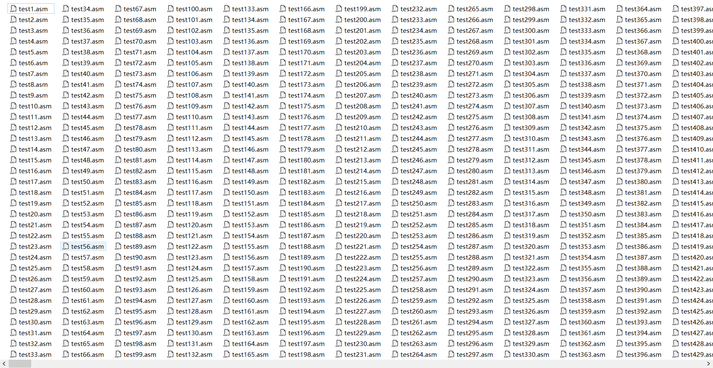
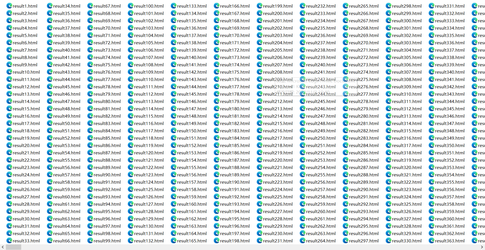

简易流水线CPU设计文档（Verilog）
一、CPU设计方案综述
（一）总体设计综述
使用Verilog开发一个流水线CPU,总体概述如下：
1.此流水线CPU为32位CPU
2.此CPU为流水线设计
3.此CPU支持的指令集为:{add,sub,ori,lw,sw,beq,lui,jal,jr,nop}
4.nop的机器码为0x0000000
5.add，sub不支持溢出
（二）关键模块定义
F_IFU
（1）端口说明
| 序号 | 信号名 | 方向 | 描述 |
| :——: | :——: | :——: | :——: |
| 1 | NPC[31:0] | I | 下一个PC值 |
| 2 | CLK | I | 时钟信号 |
| 3 | RESET | I | 复位信号 |
| 4 | PC[31:0] | O | 当前PC值 |
| 5 | Instr[31:0] | O | 当前指令 |
（2）功能定义
| 序号 | 功能 | 描述 |
| :——: | :——: | :——: |
| 1 | 取指令 | 取出当前PC所对应的指令 |
| 2 | 更改PC值 | 利用NPC更改PC值 |
D_GRF
（1）端口说明
| 序号 | 信号名 | 方向 | 描述 |
| :——: | :——: | :——: | :——: |
| 1 | A1[4:0] | I | 5位地址输入信号，指定32个寄存器中的一个，将其中存储的数据读出到RD1 |
| 2 | A2[4:0] | I | 5位地址输入信号，指定32个寄存器中的一个，将其中存储的数据读出到RD2 |
| 3 | A3[4:0] | I | 5位地址输入信号，指定32个寄存器中的一个，将其作为RD的写入地址 |
| 4 | WD[31:0] | I | 32位写入数据 |
| 5 | PC[31:0] | I | 当前PC值 |
| 6 | RD1[31:0] | O | A1指定寄存器的32位数据 |
| 7 | RD2[31:0] | O | A2指定寄存器的32位数据 |
| 8 | CLK | I | 时钟信号 |
| 9 | WE | I | 写使能信号 |
| 10 | RESET | I | 同步复位信号，清零32个寄存器中的数据 |
(2)功能定义
| 序号 | 功能 | 描述 |
| :——: | :——: | :——: |
| 1 | 同步复位 | 时钟上升沿到来时，若RESET信号有效，则将32个寄存器中的数据全部清除 |
| 2 | 读出数据 | 将A1与A2所存地址对应的寄存器的数据读出到RD1和RD2|
| 3 | 写入数据 | 当WE有效且时钟上升沿到来时，将WD写入到A3所存地址对应的寄存器中|
|4|转发数据|当A3\==A2或A3\==A1且WE有效，A3!=0时，将WD中的数据作为RD1或RD2的输出
ID_ID_REG
（1）端口说明
| 序号 | 信号名 | 方向 | 描述 |
| :——: | :——: | :——: | :——: |
|1|clk|I|时钟信号|
|2|reset|I|同步复位信号|
|3|WE|I|写使能信号|
|4|IF_Instr[31:0]|I|IF阶段机器码
|5|IF_PC[31:0]|I|IF阶段PC值
|6|ID_Instr[31:0]|O|ID阶段机器码
|7|ID_PC[31:0]|O|ID阶段PC值
(2)功能定义
| 序号 | 功能 | 描述 |
| :——: | :——: | :——: |
|1|记忆功能|ID阶段存储执行命令所需要的所有内容
Control
（1）端口说明
| 序号 | 信号名 | 方向 | 描述 |
| :——: | :——: | :——: | :——: |
|1|Instr[31:0]|I|当前指令|
|3|ExtendSign|O|扩展类型信号|
|4|Jal_sign|O|跳转信号|
|5|RegWrite|O|寄存器写使能信号|
|6|MemWrite|O|DM写使能信号|
|7|MemToReg[2:0]|O|Reg写入数据类型信号|
|8|RegDest[4:0]|O|A3寄存器选择信号|
|9|ALUop[3:0]|O|ALU功能选择信号|
|10|Beq_sign|O|分支信号|
|11|Jr_sign|O|Jr信号|
|12|RegSrc|O|ALU数据来源选择信号|
|13|imm16[15:0]|O|16位立即数|
|14|imm26[25:0]|O|26位立即数|
|15|rs[4:0]|O|rs寄存器编号|
|16|rt[4:0]|O|rt寄存器编号|
|17|rd[4:0]|O|rd寄存器编号|
|18|load|O|是否为lw指令|
|19|store|O|是否为sw指令|
|20|cal_r|O|是否为cal_r类指令|
|21|cal_i|O|是否为cal_i类指令|
|22|jal|O|是否为jal指令|
(2)真值表
| 端口 | add | sub | ori | lw|sw|lui|beq|Jal|Jr|
| :——: | :——: | :——: |:——: |:——: |:——: |:——: |:——: |:——: |:——: |
|OP|000000|000000|001101|100011|101011|001111|000100|000011|000000|
|FC|100000|100010|x|x|x|x|x|x|001000|
|ALUop|0000|0001|0011|0000|0000|0100|0000|0000|0000|
|Jump|0|0|0|0|0|0|0|1|0|
|RegWrite|1|1|1|1|0|1|0|1|0|
|MemWrite|0|0|0|0|1|0|0|0|0|
|MemToReg|00|00|00|01|00|00|00|10|00|
|RegDest|01|01|00|00|00|00|00|10|00|
|RegSrc|0|0|1|1|1|1|0|0|0|
|Branch|0|0|0|0|0|0|1|0|0|
|Jreg|0|0|0|0|0|0|0|0|1|
D_CMP
（1）端口说明
| 序号 | 信号名 | 方向 | 描述 |
| :——: | :——: | :——: | :——: |
|1|A[31:0]|I|操作数A|
|2|B[31:0]|I|操作数B|
|3|Equal|O|A==B？1：0
(2)功能定义
| 序号 | 功能 | 描述 |
| :——: | :——: | :——: |
|1|比较|比较操作数A与B是否相等，相等则Equal有效|
D_NPC
（1）端口说明
| 序号 | 信号名 | 方向 | 描述 |
| :——: | :——: | :——: | :——: |
|1|F_PC[31:0]|I|IF阶段的PC值|
|2|D_PC[31:0]|I|ID阶段的PC值|
|3|Beq_sign|I|是否为Beq指令|
|4|Jal_sign|I|是否为Jal指令|
|5|Jr_sign|I|是否为Jr指令|
|6|Jal_imm26[25:0]|I|26位立即数|
|7|D_GRF_Jr[31:0]|I|Jr目标寄存器数据|
|8|Beq_imm16[15:0]|I|16位立即数|
|9|Equal|I|D_CMP两操作数是否相等|
|10|NPC[31:0]|O|PC的下一值|
(2)功能定义
| 序号 | 功能 | 描述 |
| :——: | :——: | :——: |
|1|计算下一PC的值|根据指令和当前PC值计算下一PC值|
D_EXT
（1）端口说明
| 序号 | 信号名 | 方向 | 描述 |
| :——: | :——: | :——: | :——: |
|1|i16[15:0]|I|16位立即数
|2|i32[31:0]|O|经过扩展后的32位立即数
|3|ExtendSign|I|选择扩展类型信号 0：符号扩展 1：无符号扩展|
(2)功能定义
| 序号 | 功能 | 描述 |
| :——: | :——: | :——: |
|1|符号扩展|将16位立即数符号扩展为32位立即数|
|2|无符号扩展|将16位立即数无符号扩展为32位立即数|
ID_EX_REG
（1）端口说明
| 序号 | 信号名 | 方向 | 描述 |
| :——: | :——: | :——: | :——: |
|1|ID_Instr[31:0]|I|ID阶段机器码|
|2|D_RD1[31:0]|I|ID阶段有效数据|
|3|D_RD2[31:0]|I|ID阶段有效数据|
|4|D_imm32[31:0]|I|ID阶段32位立即数|
|5|ID_PC[31:0]|I|ID阶段PC值|
|6|clk|I|时钟信号|
|7|reset|I|复位信号|
|8|WE|I|写使能信号|
|9|EX_Instr[31:0]|O|EX阶段机器码|
|10|EX_RD1[31:0]|O|EX阶段有效数据|
|11|EX_RD2[31:0]|O|EX阶段有效数据|
|12|EX_imm32[31:0]|O|EX阶段32位立即数|
|13|EX_PC[31:0]|O|EX阶段PC值|
(2)功能定义
| 序号 | 功能 | 描述 |
| :——: | :——: | :——: |
|1|记忆功能|EX阶段存储执行命令所需要的所有内容|
E_ALU
（1）端口说明
| 序号 | 信号名 | 方向 | 描述 |
| :——: | :——: | :——: | :——: |
|1|SrcA[31:0]|I|操作数1|
|2|SrcB[31:0]|I|操作数2|
|3|ALUControl[3:0]|I|ALU功能选择信号
|5|Res[31:0]|O|运算结果|
(2)功能定义
| 序号 | 功能 | 描述 |
| :——: | :——: | :——: |
|1|判断两个操作数是否相等|相等则Bigger输出1否则为0|
|2|加运算|res=SrcA+SrcB|
|3|减运算|res=SrcA-SrcB|
|4|与运算|res=SrcA$SrcB|
|5|或运算|res=SrcB|SrcB|
|6|加载高位运算|res={SrcB[15:0],16’h0}|
EX_MEM_REG
（1）端口说明
| 序号 | 信号名 | 方向 | 描述 |
| :——: | :——: | :——: | :——: |
|1|EX_Instr[31:0]|I|EX阶段机器码|
|2|E_ALU_Result[31:0]|I|EX阶段ALU结果数据|
|3|EX_RD2[31:0]|I|EX阶段有效数据|
|4|EX_PC[31:0]|I|EX阶段PC值|
|5|clk|I|时钟信号|
|6|reset|I|复位信号|
|7|WE|I|写使能信号|
|8|MEM_Instr[31:0]|O|MEM阶段机器码|
|9|MEM_ALU_Result[31:0]|O|MEM阶段ALU结果数据|
|10|MEM_RD2[31:0]|O|MEM阶段有效数据|
|11|MEM_PC[31:0]|O|MEM阶段PC值|
(2)功能定义
| 序号 | 功能 | 描述 |
| :——: | :——: | :——: |
|1|记忆功能|MEM阶段存储执行命令所需要的所有内容|
M_DM
（1）端口说明
| 序号 | 信号名 | 方向 | 描述 |
| :——: | :——: | :——: | :——: |
|1|A[31:0]|I|32位地址输入|
|2|RD[31:0]|O|32位数据输出|
|3|WD[31:0]|I|32位数据输入|
|4|PC[31:0]|I|当前PC值|
|5|RESET|I|同步复位信号|
|6|CLK|I|时钟信号|
|7|WE|I|写使能信号|
(2)功能定义
| 序号 | 功能 | 描述 |
| :——: | :——: | :——: |
|1|写入数据|当WE有效且时钟上升沿到来时，将WD中的数据写入到A所存地址所对应的位置|
|2|读出数据|将A所存地址对应位置的数据读出到RD|
MEM_WB_REG
（1）端口说明
| 序号 | 信号名 | 方向 | 描述 |
| :——: | :——: | :——: | :——: |
|1|MEM_Instr[31:0]|I|MEM阶段机器码|
|2|MEM_ALU_Result[31:0]|I|MEM阶段ALU结果数据|
|3|MEM_DM_RD[31:0]|I|MEM阶段DM读出数据|
|4|MEM_PC[31:0]|I|MEM阶段PC值|
|5|clk|I|时钟信号|
|6|reset|I|复位信号|
|7|WE|I|写使能信号|
|8|WB_Instr[31:0]|O|WB阶段机器码|
|9|WB_ALU_Result[31:0]|O|WB阶段ALU结果数据|
|10|WB_DM_RD[31:0]|O|WB阶段DM读出数据|
|11|WB_PC[31:0]|O|WB阶段PC值|
(2)功能定义
| 序号 | 功能 | 描述 |
| :——: | :——: | :——: |
|1|记忆功能|WB阶段存储执行命令所需要的所有内容|
Stall
（1）端口说明
| 序号 | 信号名 | 方向 | 描述 |
| :——: | :——: | :——: | :——: |
|1|D_Instr[31:0]|I|ID阶段机器码|
|2|E_Instr[31:0]|I|EX阶段机器码|
|3|M_Instr[31:0]|I|MEM阶段机器码|
|4|Stall|O|阻塞信号|
(2)功能定义
| 序号 | 功能 | 描述 |
| :——: | :——: | :——: |
|1|阻塞功能|判断当前流水线是否需要在ID阶段阻塞|
(3)判断方法——AT法
| 指令 | rsTuse | rtTuse |
| :——: | :——: | :——: |
|add|1|1|
|sub|1|1|
|ori|1|-|
|lw|1|-|
|sw|1|2|
|beq|0|0|
|lui|-|-|
|jal|-|-|
|jr|0|-|
| 指令 | E_Tnew | M_Tnew |
|---|---|---|
| add | 1 | 0 |
| sub | 1 | 0 |
| ori | 1 | 0 |
| lw | 2 | 1 |
| sw | - | - |
| beq | - | - |
| lui | 1 | 0 |
| jal | 0 | 0 |
| jr | - | - |
Forward
（1）端口说明
| 序号 | 信号名 | 方向 | 描述 |
| :——: | :——: | :——: | :——: |
|1|E_Instr[31:0]|I|EX阶段机器码|
|2|M_Instr[31:0]|I|MEM阶段机器码|
|3|W_Instr[31:0]|I|WB阶段机器码|
|4|EX_Forward|O|EX阶段数据是否可以转发信号|
|5|MEM_Forward|O|MEM阶段数据是否可以转发信号|
|6|WB_Forward|O|WB阶段数据是否可以转发信号|
（2）功能定义
| 序号 | 功能 | 描述 |
| :——: | :——: | :——: |
|1|转发信号|判断每个阶段是否可以为前面转发数据|
转发暂停控制
暂停：
wire Stall_rs_E = (E_RegDest == D_rs) &&(E_RegDest) && (T_use_rs < T_new_E) && E_RegWrite;
wire Stall_rt_E = (E_RegDest == D_rt) && (E_RegDest) && (T_use_rt < T_new_E) && E_RegWrite;
wire Stall_E = Stall_rs_E || Stall_rt_E;
wire Stall_rs_M = (M_RegDest == D_rs) && (M_RegDest) && (T_use_rs < T_new_M) && M_RegWrite;
wire Stall_rt_M = (M_RegDest == D_rt) && (M_RegDest) && (T_use_rt < T_new_M) && M_RegWrite;
wire Stall_M = Stall_rs_M || Stall_rt_M;
assign Stall = Stall_M || Stall_E;
转发：
wire [31:0] D_Forward_rs = (D_rs == 0)? 0 :
((E_RegDest == D_rs) && EX_Forward && E_RegWrite) ? E_MemToReg :
((M_RegDest == D_rs) && MEM_Forward && M_RegWrite) ? M_MemToReg : D_RD1;
wire [31:0] D_Forward_rt = (D_rt == 0)? 0 :
((E_RegDest == D_rt) && EX_Forward && E_RegWrite) ? E_MemToReg :
((M_RegDest == D_rt) && MEM_Forward && M_RegWrite) ? M_MemToReg : D_RD2;
wire [31:0] E_Forward_rs = (E_rs == 0) ? 0 :
((M_RegDest == E_rs) && MEM_Forward && M_RegWrite) ? M_MemToReg :
((W_RegDest == E_rs) && WB_Forward && W_RegWrite) ? W_MemToReg : EX_RD1;
wire [31:0] E_Forward_rt = (E_rt == 0) ? 0 :
((M_RegDest == E_rt) && MEM_Forward && M_RegWrite) ? M_MemToReg :
((W_RegDest == E_rt) && WB_Forward && W_RegWrite) ? W_MemToReg : EX_RD2;
测试方案
测试代码
为自动化测试：
共随机生成1000组数据

并生成1000组比对文件

和一个总体结果文件
思考题
（1）我们使用提前分支判断的方法尽早产生结果来减少因不确定而带来的开销，但实际上这种方法并非总能提高效率，请从流水线冒险的角度思考其原因并给出一个指令序列的例子。
答：分支判断确实是提前了，但其他指令并没有提前，这或许会导致原本只需要进行转发的指令因为这一提前而不能及时生成导致需要阻塞，例如：
add $t1,$t2,$t3
beq $t1,$t2,label
label:
在这个例子中，Beq的提前判断会导致原本转发可以解决的$t1的值的更新需要阻塞一个周期。
因为Beq在ID阶段CMP中判断时，add指令$t1的值还没有存入流水线寄存器，不能转发，需要阻塞一周期。
若Beq在EX阶段ALU中判断，则此时EX/MEM流水线寄存器中已经存有了$t1正确的值，可以转发，不需要阻塞。
（2）因为延迟槽的存在，对于 jal 等需要将指令地址写入寄存器的指令，要写回 PC + 8，请思考为什么这样设计？
答：延迟槽的存在，会让jal跳转时也会执行其下一条指令，也正因为这条指令已经被执行过了，为了维护程序的正确性，当利用jr或其他指令返回时，我们需要跳到Jal的下两条指令，即PC+8，也因此要将它存入$31寄存器中，而非PC+4
（3）我们要求大家所有转发数据都来源于流水寄存器而不能是功能部件（如 DM 、 ALU ），请思考为什么？
答：首先我个人认为从功能部件进行转发也是合理的，即“Brutal-Forward”，但这样转发显然没有流水线转发直观，会让转发的控制变得更加复杂。
（4）我们为什么要使用 GPR 内部转发？该如何实现？
答：GPR内部转发可以实现WB->ID的转发，举个例子：
WB:add $t1,$t2,$t3
ID:sub $t1,$t2,$t3
此时显然ID中的SUB需要使用的是WB中$t1的值，因此需要转发，利用该内部转发便可实现这样的功能，提高流水线运行效率。
实现方法:
如图：只需在RD1和RD2输出加一个三目运算符即可
！注意：需要考虑A3是否为0（对$0写入实际写入为0，而并非WD）
！注意：需要考虑WE是否有效（只有对GRF写入的数据才应该被转发）
！注意：需要考虑A1或A2是否等于A3（只有相同寄存器的数据才需要被转发）
（5）我们转发时数据的需求者和供给者可能来源于哪些位置？共有哪些转发数据通路？
答：
需求者：CMP的两个操作数；ALU的两个操作数；DM的WD端口
供给者：ID_EX流水线寄存器，EX_MEM流水线寄存器，MEM_WB流水线寄存器
通路：
ID_EX->CMP
EX_MEM->CMP
MEM_WB->CMP
EX_MEM->ALU
MEM_WB->AKU
MEM_WB->DM
（6）在课上测试时，我们需要你现场实现新的指令，对于这些新的指令，你可能需要在原有的数据通路上做哪些扩展或修改？提示：你可以对指令进行分类，思考每一类指令可能修改或扩展哪些位置。
答：
跳转：可能需要在Control加入新的控制信号识别该指令,并在NPC中加入完成该指令的方法，并添加if分支选择其作为NPC，并考虑跳转和阻塞问题。
计算：可能需要在Control加入新的ALUop信号计算该指令，并在ALU中加入完成该指令的方法，并考虑跳转和阻塞问题。
访存：可能需要在Control加入新的控制信号识别该指令，并在DM中完成该访存的方法，并考虑跳转和阻塞问题。
（7）简要描述你的译码器架构，并思考该架构的优势以及不足。
答：
我选用的是分布式译码器，该架构的优势在于不需要流水控制信号，只需要在不同的流水线阶段生成不同的控制信号即可，实现起来无论是思路还是代码量上都远远少于集中式译码器，且不用考虑Tnew随周期数减少的问题。
不足在于多次实例化Control模块，每一次实例都闲置了大量的端口，造成了资源的浪费。且实际应用中增加了数据通路的长度，降低了效率。
（8）请详细描述你的测试方案及测试数据构造策略。
答：测试方案：
（1）第一步编写生成指令代码，自动生成为test.asm文件
（2）第二步利用python os库运行mars执行“test.asm”使其生成“command.txt”（里面为机器码）和标准输出（魔改mars)“mar.txt”
（3）第三步自动生成ise的.prj和.tcl文件
（4）第四步利用python os库运行ise使其生成“raw_out.txt”
（5）第五步将raw_out的头部无用内容处理掉，生成”verilog.txt”文件
（5）第五步利用python difflib或进行文本比较，生成“result.html”并输出”Accepted!”或“Wrong Answer!”